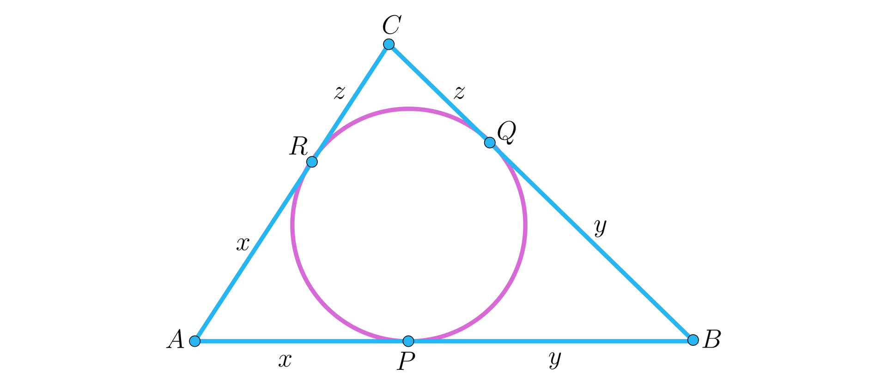

| Miejsce | Nick Discord | Punkty |
|---|
§ 1. Organizator
Organizatorem konkursu jest założyciel bloga.
§ 2. Uczestnicy
Konkurs jest skierowany przede wszystkim do tegorocznych maturzystów. Mogą w nim również brać udział uczniowie młodszych klas. Uczestnikiem może zostać każda osoba, która odbyła z organizatorem co najmniej jedną lekcję.
§ 3. Dobrowolność udziału
Udział w konkursie jest dobrowolny.
§ 4. Punktacja
Każde zadanie konkursowe jest warte 5 punktów.
§ 5. Samodzielne rozwiązywanie zadań
Obowiązuje całkowity zakaz korzystania ze sztucznej inteligencji (AI) oraz wyszukiwania rozwiązań w Google i innych wyszukiwarkach internetowych, chyba że organizator wyraźnie postanowi inaczej.
§ 6. Przesyłanie rozwiązań i terminy
Rozwiązania należy przesyłać organizatorowi w prywatnej wiadomości na Discordzie. Nowe zadania są publikowane w każdą niedzielę po godzinie 21:00. Czas na rozwiązanie każdego zadania wynosi 7 dni (tydzień) od jego publikacji, chyba że organizator poinformuje o innym terminie.
§ 7. Nagrody
W okolicach czerwca przewidziane są nagrody rzeczowe dla trzech uczestników z najwyższą liczbą punktów.
§ 8. Zmiany regulaminu
Organizator zastrzega sobie prawo do zmiany regulaminu w trakcie trwania konkursu z dowolnego powodu.
Jaki jest stopień wielomianu \(P(x) = (x-a)(x-b)(x-c)\cdots(x-z)\)
Wskazówka dla zmyły: alfabet angielski liczy 26 liter
Przechodzimy przez WSZYSTKIE litery alfabetu angielskiego...
Kluczowa jest tu obserwacja, że litera \(x\) też występuje w alfabecie. Wobec tego, w pewnym nawiasie (konkretnie to w przed, przed, przedostatnim :D) pojawi się \((x - x) = 0\). A skoro wielomian jest w postaci iloczynowej i jeden z czynników jest zerem, to cały wielomian jest tożsamościowo równy \(0\).
Jaki jest jego stopień? No najlepszą odpowiedzią jest właśnie, że stopień jest nieokreślony/niezdefiniowany. Dlaczego?
No gdy mamy \(f(x) = a = const \neq 0\), to stopień wiel. \(f\) jest równy \(0\), bo to wielomian stały. \(P(x) = 0\) także jest wielomianem stałym, ale z jego stopniem jest problem.
Na pewno słyszeliście, że wielomian stopnia \(n\) może mieć co najwyżej \(n\) pierwiastków, czyli \(n\) miejsc zerowych. A \(P(x) = 0\) ma ich tak z grubsza nieskończenie wiele, bo każda liczba rzeczywista jest jego pierwiastkiem. Czyli co w takim razie?
Stopień wielomianu \(P(x)\) powinien w takim razie wynosić \(+\infty\)? No teoretycznie tak, ale z tym jest mały problem... Przy takiej umowie własność, że stopień iloczynu dwóch wielomianów jest równy sumie ich stopni, przestaje działać. Można to uratować, przyjmując, że jednak jego stopień to \(-\infty\), ale wtedy psuje się argument z liczbą miejsc zerowych.
Na maturę musicie wiedzieć, że liczba pierwiatków wielomianu stopnia \(n\) jest \(\leq n\). Natomiast jak się wybierzecie na jakieś studia matematyczne, czy coś, czego ogromnie Wam życzę, to się dowiecie, że istnieją struktury algebraiczne, w których NIE JEST to prawda i np. wielomian stopnia 3ciego może mieć w pewnej strukturze algebraicznej 4 pierwiastki, ot: taka ciekawostka.
Liczby \(a, b, c, d \in \mathbb{R}\) spełniają warunki: \[ \begin{cases} a + b + c + d > 0, \\ ab + ac + ad + bc + bd +cd > 0, \\ abc + abd + acd + bcd > 0, \\ abcd > 0, \end{cases} \] Udowodnij, że każda z liczb \(a, b, c, d\) jest dodatnia, tzn. udowodnij, że \(a > 0, b> 0, c > 0, d > 0\)
Rozważ wielomian, którego pierwiastkami są liczby \(a, b, c, d\).
Skorzystaj ze wzorów Viete'a. Wzory Viete'a są słuszne nie tylko dla równań/funkcji kwadratowych. Ładnie uogólniają się na wielomiany wyższych stopni
Wiele zadań w istocie rzeczy sprowadza się do znalezienia pierwiastka pewnego równania algebraicznego. Ale zdarza się, że podstępowanie odwrotne, czyli skonstruowanie wielomianu o z góry zadanych pierwiastkach jest równie efektywne...
Jak znaleźć wielomian, którego pierwiastkami są \(a, b, c, d\)? Najprostszym rozwiązaniem jest oczywiście wielomian unormowany:
\[W(x) = (x-a)(x-b)(x-c)(x-d) = x^4 -px^3 + qx^2 -rx + s\]
Współczynniki są powiązane z lewymi stronami nierówności w naszym układzie. Natychmiastowym wnioskiem jest, że musi być:
\(p, q, r, s > 0\). W takim razie gdyby \(x \leq 0\), to \(P(x) > 0\), czyli w szczególności \(P(x) \neq 0\). (Liczba dodatnia nie może być zerem). Zatem pierwiastki wielomianu muszą być dodatnie, bo nie mogą być niedodatnie :P
Liczby \(x, y, z\) spełniają układ równań:
\begin{cases} x + y + z = 1 \\ x^2 + y^2 + z^2 = 2 \\ x^3 + y^3 + z^3 = 3 \end{cases}
Problem:Ile wynosi suma \(x^4 + y^4 + z^4\) ?
Wskazówki do tego zadania i jego rozwiązanie znajduje się w moim artykule na temat wzorów Girarda - Newtona, link: Kliknij tutaj
Rozwiąż równanie \((x+1)(x+2)(x+3)(x+4) = 8\)
Nie wymnażajcie tego wszystkiego, bo powstanie wielomian 4 stopnia, którego wyraz wolny to 16. (zbyt dużo ma dzielników)
Mnożenie liczb jest działaniem łącznym (i przemiennym(!)), więc możecie sobie zgrupować: \([(x+1)(x+4)]\cdot[(x+2)(x+3)]\)
Jak otworzycie te dwa duże nawiasy, to będą podobne rzeczy w obydwu nawiasach
Sprowadźcie problem do prostszego problemu: przecież umiecie już rozwiązywać równania kwadratowe, umiecie?
Zastosujcie podstawienie (użyjcie zmiennej pomocniczej)
To równanie NIE MA pierwiastków wymiernych, więc nie stosujcie tw. o pierwiastkach wymiernych. Ono po prostu NIE ZADZIAŁA (tutaj akurat nie zadziała)
Przekształcamy równanie do postaci
\([(x+1)(x+4)] \cdot [(x+2)(x+3)] = 8 \iff (x^2 + 5x + 4)\cdot (x^2 + 5x + 6) = 8\)
Widzimy, że drugi nawias jest wyrażeniem o 2 większym niż wyrażenie w pierwszym nawiasie.
Niech \(t = x^2 + 5x + 4\). Wówczas równanie przybiera postać:
\(t(t+2) = 8 \iff t^2 + 2t - 8 = 0\)
Liczymy deltę: \(\Delta = 2^2 - 4\cdot1\cdot(-8) = 36 \implies \sqrt{\Delta} = 6\)
Pierwiastki: \(t_1 = \frac{-2-6}{2} = -4, t_2 = \frac{-2+6}{2} = 2\)
Wracamy do "oryginalnej" zmiennej, przypominamy sobie czym było \(t\)
\(t = x^2 + 5x + 4\)
\((x^2 + 5x + 4 = -4 \lor x^2 + 5x + 4 = 2) \iff x^2 + 5x + 8 = 0 \lor x^2 + 5x + 2 = 0\)
\(\Delta_1 = 5^2 - 4\cdot1\cdot 8 < 0 \implies x \in \emptyset\)
\(\Delta_2 = 25 - 4\cdot 1 \cdot 2 = 17 \implies \sqrt{\Delta_2} = \sqrt{17}\)
\(x_1 = \frac{-5-\sqrt{17}}{2} \lor x_2 = \frac{-5+\sqrt{17}}{2}\)
Ostatecznie, zbiorem rozwiązań wyjściowego równania jest \(x \in \{\frac{-5-\sqrt{17}}{2}, \frac{-5+\sqrt{17}}{2}\}\)
Liczby \(a, b, c \in \mathbb{R}\) spełniają warunek \(a + b + c = 0\). Udowodnij, że \(a^3 + b^3 + c^3 = 3abc\)
Rozwiązanie
Sposób I (łatwiejszy)
Każdy kto zna wzór skróconego mnożenia na sześcian sumy lub potrafi znaleźć go w Karcie Wzorów i użyć jest w stanie rozwiązać to zadanie.
Z założenia wyliczcie sobie którąś literkę, np. \(a + b = -c\) i działajcie na tym.
Z założenia \(a + b = -c\), podnosimy to stronami do potęgi trzeciej i korzystamy ze wzoru skróconego mnożenia.
\((a+b)^3 = (-c)^3 = -c^3\)
\(a^3 + 3a^2b + 3ab^2 + b^3 = -c^3 \iff a^3 + b^3 + c^3 = -3ab(a+b)\) Ale znowu, przecież \(a + b = -c \)
Zatem \(a^3 + b^3 + c^3 = -3ab\cdot(-c) = 3abc \ \blacksquare\) Q.E.D
Sposób II (trudniejszy)
Kto czytał mój wpis na blogu o wzorach Girarda - Newtona, ten widzi że można je tu użyć (dlaczego?)
Możecie też, tak jak to pokazywałem skonstruować sobie wielomian, którego pierwiastkami są \(a, b, c\) i pobawić się nim
Wiedząc, że \(\log_{a}p = 2, \log_b{p} = 3, log_{c}p = 6\) oraz \(abc \neq 1\), oblicz \(\log_{abc}p\)
Trzeba skorzystać z definicji logarytmu i ewentualnie wysilić się na tyle, by otworzyć kartę wzorów i znaleźć w niej wzór na zamianę podstaw logarytmu można też wygooglować sobie ten wzór.
Z definicji logarytmu wynikają równości: \(a^2 = p, b^3 = p, c^6 = p\), skąd: \(a = \sqrt{p} = p^{\frac{1}{2}}, b = \sqrt[3]{p} = p^{\frac{1}{3}}, c = \sqrt[6]{p} = p^{\frac{1}{6}}\)
W takim razie \(\log_{abc}p = \log_{{p^{\frac{1}{2}}\cdot p^{\frac{1}{3}}}\cdot p^{\frac{1}{6}}}p = \log_{p^{\frac{1}{2} + \frac{1}{3} +\frac{1}{6}}}p = \log_pp = 1\)
Rozwiązanie
Sposób I (metoda "szkolna", czysto obliczeniowo)
Potrzebne będzie tzw. podstawienie Raviego (ang. Ravi substitution) - wygooglujcie sobie. Poza nim, wszystkie narzędzia, których potrzebujecie by rozwiązać to zadanie są w Karcie Wzorów. Trzeba tylko połączyć fakty...
Niech \(S\) oznacza pole trójkąta \(\Delta ABC\). Zachodzą wzory (z karty wzorów):
\(S = \frac{abc}{4R} \implies R = \frac{abc}{4S}\) oraz \(S = r\cdot p \implies r = \frac{S}{p} = \frac{2S}{a+b+c}\)
Gdzie \(p\) jest połową obwodu, tzn. \(p = \frac{1}{2} \cdot (a+b+c)\)
Mamy udowodnić nierówność \(R \geq 2r \iff \frac{abc}{4S} \geq \frac{4S}{a+b+c} \iff abc(a+b+c) \geq 16S^2\)
Znowu otwieramy Kartę Wzorów i znajdujemy w niej tzw. wzór Herona na pole trójkąta: \(S = \sqrt{p(p-a)(p-b)(p-c)}\)
Potrzebne nam będzie tzw. podstawienie Raviego.
LEMAT
Jeżeli \(a, b, c\) są długościami boków trojkąta, to istnieją takie dodatnie liczby rzeczyswiste \(x, y, z\), że zachodzi:
\(a = x + y, b = x + z, c = z + y\)
Dowód lematu:
W każdy trójkąt można wpisać okrąg, bo w każdym trójkącie dwusieczne kątów przecinają się w jednym punkcie - istnieje środek okręgu wpisanego, punkt \(I\). Jest to prosty wniosek z tzw. trygonometrycznego twierdzenia Cevy, które to twierdzenie omówię w którymś z kolejnych artykułów.
Możemy zaznaczyć punkty styczności okręgu z bokami trójkąta. Wówczas na podstawie twierdzenia o odcinkach stycznych, albo w nomenklaturze olimpijskiej: najmocniejszego twierdzenia geometrii mamy:

\(a = |AB| = |AP| + |PB| = x + y\). Podobnie wyznaczamy \(b\) i \(c\)
Dzięki podstawieniu Raviego mamy: \(p = \frac{a+b+c}{2} = x + y + z, p - a = z, p - b = y, p - c = x\) i tym samym wzór Herona przybiera postać:
\[S = \sqrt{(x+y+z)xyz}\]
Dowodzona nierówność wygląda zatem tak:
\[(x+y)(x+z)(z+y)\cdot 2(x+y+z) \geq 16(x+y+z)xyz\]
Czyli równoważnie:
\[\tag{*} (x + y)(x + z)(z + y) \geq 8xyz\]. A ta nierówność jest bardzo łatwa do udowodnienia.
Przecież na mocy nierówności między średnimi: arytmetyczną i geometryczną zachodzi:
\(x + y \geq 2\sqrt{xy}, x + z \geq 2\sqrt{xz}, z + y \geq 2\sqrt{zy}\)
Wymnażając je stronami dostajemy nierówność (*), czyli tezę. \(\blacksquare\) Q.E.D
Zastanówmy, się kiedy w rozważanej nierówności zachodzi równość...
Wtedy, gdy w nierównościach między średnimi jest równość, czyli wtedy i tylko wtedy, gdy \(x = y, x = z, z = y\), co implikuje równość boków \(a = b = c\) czyli równoboczność trójąta.
Sposób II (metoda olimpijska)
Zachodzi twierdzenie Eulera o okręgach, które mówi że kwadrat odległości między środkiem okręgu opisanego i wpisanego jest równy iloczynowi promienia \(R\) okręgu opisanego i róznicy między tym promieniem a średnicą \(2r\) okręgu wpisanego.
Formalnie: Niech \(O\) oznacza środek okręgu opisanego, zaś \(I\) środek okręgu wpisanego. Wówczas:
\[|OI|^2 = R\cdot (R-2r)\]
Lewa strona powyższej nierówności jest nieujemna (\(\geq 0\)). Zatem prawa strona też taka musi być. Ale \(R > 0\) jako długość odcinka. Zatem drugi czynnik musi być nieujemny, czyli \(R - 2r \geq 0 \iff R \geq 2r\), skąd teza. \(\blacksquare\) Q.E.D
Zastanówmy się jeszcze, kiedy zachodzi równość? No... Jeżeli \(R = 2r\) to prawa strona równania się zeruje, czyli lewa też zatem \(|OI|^2 = 0 \implies O = I\), czyli w takiej sytuacji środek okręgu opisanego i wpisanego się pokrywają (to ten sam punkt).
Takie coś jest możliwe w trójkacie równobocznym (i jedynie w trójkącie równobocznym, żadnym innym :D)
To zadanie należy zrobić, mając do dyspozycji jedynie kartkę, głowę i coś do pisania. Obowiązuje ZAKAZ używania AI, kalkulatorów, stron internetowych zdolnych do przeprowadzania obliczeń symbolicznych itp.
Oblicz: \[ \frac{1}{1\cdot2\cdot3} + \frac{1}{2\cdot3\cdot4} + \frac{1}{3\cdot4\cdot5} + \cdots + \frac{1}{1000\cdot1001\cdot1002} \]
Każdy składnik jest postaci \(\frac{1}{k(k+1)(k+2)}\). Rozłóż to wyrażenie na tzw. ułamki proste. Patrz wsk. nr 2
Znajdź jakie liczby \(A, B, C\) dla których \(\frac{1}{k(k+1)(k+2)} = \frac{A}{k} + \frac{B}{k+1} + \frac{C}{k+2}\). W tym celu sprowadź to równanie do równania wielomianowego przemnażając stronami przez \(k(k+1)(k+2)\)
Skorzystaj z tzw. równości wielomianów, która pozwala przyrównać do siebie współczynniki. Powstanie układ 3 równań z 3ema niewiadomymi: \(A, B, C\). Rozwiąż go i teleskopuj sumę.
EDIT: Jednak nie trzeba tego rozkładać na sumę 3 ułamków prostych, to zadziała niby ale da się prościej... Ale ja bym nie wpadł na to...
Rozwiązanie zostanie opublikowane w najbliższą niedzielę po 21:00
Uprość sumę: \[ \frac{1}{\sqrt{1 + \sqrt{1^2 - 1}}} + \frac{1}{\sqrt{2 + \sqrt{2^2 - 1}}} + \frac{1}{\sqrt{3 + \sqrt{3^2 - 1}}} + \cdots + \frac{1}{\sqrt{100 + \sqrt{100^2 - 1}}} \]
Uprość iloczyn: \[ \left(1 - \frac{1}{2^2}\right)\cdot\left(1 - \frac{1}{3^2}\right)\cdot\left(1 - \frac{1}{3^2}\right)\cdots\left(1 - \frac{1}{100^2}\right) \]
Uprość sumę: \[ \frac{6^1}{(3^1 - 2^1)(3^2 - 2^2)} + \frac{6^2}{(3^2 - 2^2)(3^3 - 2^3)} + \frac{6^3}{(3^3 - 2^3)(3^4 - 2^4)} + \cdots + \frac{6^{100}}{(3^{100} - 2^{100})(3^{101} - 2^{101})} \]
Uprość sumę: \[ -\frac{1^2 + 1 + 1}{1!} + \frac{2^2 + 2 + 1}{2!} - \frac{3^2 + 3 + 1}{3!} + \cdots + (-1)^{2026}\frac{2026^2 + 2026 + 1}{2026!} \]
Licznik Każdego składnika jest postaci \(k^2 + k + 1 = (k+1)^2 - k\)
Rozwiązanie zostanie opublikowane w najbliższą niedzielę po 21:00
Uprość iloczyn: \[ (1^1\cdot1!)(2^2\cdot2!)(3^3\cdot3!)\cdots(100^{100}\cdot100!) \]
Uprość sumę: \[ \frac{1}{2\sqrt{1} + 1\sqrt{2}} + \frac{1}{3\sqrt{2} + 2\sqrt{3}} + \cdots + \frac{1}{101\sqrt{100} + 100\sqrt{101}} \]
Dla dowolnego \(x\in\mathbb{R}\) definiujemy: \[ f(x) = \frac{1}{\sqrt[3]{x^2 - 2x + 1} + \sqrt[3]{x^2 - 1} + \sqrt[3]{x^2 + 2x + 1}} \] Uprość sumę \(f(1) + f(3) + f(5) + \cdots + f(999\,999)\).
Uprość sumę: \[ \sqrt{1 + \frac{1}{1^2} + \frac{1}{2^2}} + \sqrt{1 + \frac{1}{2^2} + \frac{1}{3^2}} + \sqrt{1 + \frac{1}{3^2} + \frac{1}{4^2}} + \cdots + \sqrt{1 + \frac{1}{2026^2} + \frac{1}{2027^2}} \]
Każdy składnik jest postaci \(\sqrt{1+\frac{1}{k^2} + \frac{1}{(k+1)^2}} = \sqrt{\frac{(k^2 + k + 1)^2}{(k(k+1))^2}} = \frac{k^2 + k + 1}{k^2 + k} = 1 + \frac{1}{k(k+1)} = 1 + \frac{1}{k} - \frac{1}{k+1}\)
Rozwiązanie zostanie opublikowane w najbliższą niedzielę po 21:00
Uprość iloczyn: \[ \frac{2^3-1}{2^3+1}\cdot\frac{3^3-1}{3^3+1}\cdot\frac{4^3-1}{4^3+1}\cdots\frac{n^3-1}{n^3+1} \]
Udodownij, że dla dowolnej liczby \(n \in \mathbb{N}\) zachodzi nierówność:
\[1+\frac{1}{2^2} +\frac{1}{3^2} +\frac{1}{4^2} + \cdots + +\frac{1}{n^2} < 2 \]
2 jest naprawdę słabym oszacowaniem tej sumy. Można udowodnić, że dla dowolnego \(n\) ta suma jest mniejsza niż \(1,65\) Użyjcie indukcji matematycznej. Musicie wzmocnić tezę zadania. Udowodnijcie, że dla dowolnego \(n\) ta suma jest \(< 2 - 1/n\) jasne, że to dowodzi docelową tezę, bo \(2 - 1/n < 2\). Szacujcie mianowniki tych ułamków... każdy składnik jest ułamkiem postaci \(1/(k^2)\) Zobaczcie, że \(k^2 = k*k > k(k-1)\)
Alternatywnie możecie sobie wygooglać czym jest tzw. problem bazylejski oraz powiązana z tym problemem funkcja dzeta Riemanna, ale to alternatywne rozwiązanie wymaga bardzo zaawansowanego aparatu matematycznego, jednak jest bardzo piękne i pomysłowe
Sposób I:
Zauważmy, że \(k^2 = k \cdot k > k(k-1) \implies \frac{1}{k^2} < \frac{1}{k(k-1)}\)
Zachodzi rozkład: \(\frac{1}{k(k-1)} = \frac{1}{k-1} - \frac{1}{k}\)
Zatem szacując każdy składnik tej sumy, począwszy od drugiego składnika w powyższy sposób mamy:
\(1+\frac{1}{2^2} +\frac{1}{3^2} +\frac{1}{4^2} + \cdots + \frac{1}{n^2} < 1 + \frac{1}{2\cdot1} + \frac{1}{3\cdot2} + \frac{1}{4\cdot3} + \cdots + \frac{1}{n\cdot(n-1)} = 1 + \frac{1}{1} - \frac{1}{2} + + \frac{1}{2} - \frac{1}{3} + \frac{1}{3} - \frac{1}{4} + \cdots + \frac{1}{n-1} - \frac{1}{n} = 1+1-\frac{1}{n} = 2 - \frac{1}{n} < 2 \ \blacksquare Q.E.D\), bo skoro \(n \geq 1\), to \(\frac{1}{n} > 0\), czyli \(-\frac{1}{n} < 0\)
Wiedząc, że \(tgx + \frac{1}{tgx} = 3\):
a) Oblicz \(tg^2x + \frac{1}{tg^2{x}}\)
b) Oblicz \(tg^3x + \frac{1}{tg^3{x}}\)
c) Oblicz \(tg^{100}x + \frac{1}{tg^{100}{x}}\)
d) Oblicz \(tg^{2026}x + \frac{1}{tg^{2026}{x}}\)
e) Zdefiniujmy \(T_n = tg^nx +\frac{1}{tg^nx}\) Wyprowadź wzór rekurencyjny na \(T_n\) w zależności od poprzednich wyrazów \(T_{n-1}, T_{n-2}, \cdots T_1, T_0\). Następnie scharakteryzuj tak powstałe równanie rekurencyjne i rozwiąż je, tym samym otrzymując tzw. wzór jawny na \(T_n\).
Licznik Każdego składnika jest postaci \(k^2 + k + 1 = (k+1)^2 - k\)
Rozwiązanie zostanie opublikowane w najbliższą niedzielę po 21:00
a) Uzasadnij, że równanie \(3cos(4x) + 4sin(3x) = 8\) jest sprzeczne.
b) Wyznacz zbiór wartości funkcji \(f_1(x) = sin(x) + cos(x), f_2(x) = 6cos(x) - 4sin(x)\)
c) Uzasadnij, że zbiór wartości funkcji \(g(x) = Asin(x) + Bcos(x)\) jest taki sam, jak zbiór wartości funkcji \(h(x) = Bsin(x) + Acos(x)\) i wyznacz ten zbiór wartości.
d) Wyprowadź wzór na sinus i cosinus kąta potrojonego w zależności od \(sin(x)\) i \(cos(x)\)
e) Wyprowadź wzór na \(tg(3x)\) w zależności od \(tg(x)\)a) Funkcje \(y = sin(x)\) i \(y = cos(x)\) dla \(x \in \mathbb{R}\) są ograniczone, zachodzą nierówności:
\( sin(x) \leq 1 \land cos(x) \leq 1\). Oczywiście argument może być dowolny, dowolnie duży i dalej sinus i cosinus nie przekroczą jedynki...
\(cos(4x) \leq 1 \implies 3cos(4x) \leq 3\cdot1 = 3\)
Podobnie \(sin(3x) \leq 1 \implies 4sin(3x) \leq 4\cdot1 = 4\)
Dodając te dwie nierówności stronami, dostajemy że \(3cos(4x) + 4sin(3x) \leq 3 + 4 = 7\)
Zatem lewa strona nierówności NIE PRZEKRACZA liczby 7. Nigdy nie może zatem być równa liczbie 8, stąd równanie jest sprzeczne.
b)
c) Znany jest wzór \(\)
d) Chcemy wyprowadzić wzór na \(sin(3x)\) oraz \(cos(3x)\) Znany jest wzór \(sin(\alpha + \beta) = sin(\alpha)\cdot cos(\beta) + sin(\beta)\cdot cos(\alpha)\)
Wystarczy przyjąć \(\alpha = 2x, \beta = x\): \(sin(3x) = sin(2x + x) = sin(2x)\cdot cos(x) + sin(x)\cdot cos(2x) = 2\cdot sin(x)\cdot cos(x) \cdot cos(x) + sin(x)\cdot [cos^2(x) - sin^2(x)] = 2sin(x)cos^2(x) + sin(x)(1-2sin^2(x) = 2sin(x)(1-sin^2(x)) + sin(x)(1-2sin^2(x) = sin(x)(2 - 2sin^2(x) + 1 - 2sin^2(x)) = sin(x)(3 - 4sin^2(x)) = 3sin(x) - 4sin^3(x) \)Podobnie, znany jest wzór \(cos(\alpha + \beta) = cos(\\)
e)
Rozwiąż nierówność: \(|x-3| + |x-6| < 2\)
Sposób I (metoda szkolna)
Sposób II (olimpijski)
Trzeba rozbić to na 3 przypadki, liczbami które "zerują" wyrażenia pod wartościami bezwzględnymi są \(3\) i \(6\).
1) \(x < 3\)
Nierówność przybiera postać: \(-x + 3 -x +6 < 2 \iff -2x < -7 \iff x > \frac{7}{2}\), co jest sprzeczne z założeniem poczynionym w 1. przypadku. Zatem "na lewo od trójki" ta nierówność NIE ma rozwiązań(!)
2) \(3 \leq x < 6\)
Nierówność przybiera postać: \(x-3 -x + 6 < 2 \iff 3 < 2\), co jest oczywistą sprzecznością. Oznacza to, że w przedziale \( [3, 6) \) ta nierówność NIE ma rozwiązań.
3) \(x \geq 6\)
Nierówność przybiera postać: \(x - 3 + x - 6 < 2 \iff 2x < 11 \iff x < \frac{11}{2}\) co jest sprzeczne z założeniem poczynionym w 3. przypadku. "Na prawo od 6" NIE ma rozwiązań.
1) \(x < 3 \implies x \in \emptyset\) (Nie da się jednocześnie pogodzić warunków \(x < 3 \land x > \frac{7}{2}\)
2) \(3 \leq x < 6 \implies x \in \emptyset\)
3) \(x \geq 6 \implies x \in \emptyset\) (Nie da się jednocześnie pogodzić warunków \(x \geq 6 \land x < \frac{11}{2}\))
Ostatecznym rozwiżaniem jest suma z rozwiązań z poszczególnych przypadków, czyli \(x \in \emptyset \cup \emptyset \cup \emptyset\)
Co można zapisać krócej: \(x \in \emptyset\)
Nierówność jest sprzeczna, nie ma rozwiązań...
Dla dowolnych \(a, b \in \mathbb{R}\) zachodzi: \(|a - b| = |b - a|\) Można tę własność udowodnić algebraicznie:
\(|a-b| = |-(b-a)| = |-1\cdot(b-a)| = |-1|\cdot||b-a| = 1\cdot|b-a| = |b-a|\) (Bo wartość bezwzględna z iloczynu jest równa iloczynowi wartości bezwzględnych.)
Można też skorzystać z interpretacji geometrycznej wartości bezwględnej, otóż: liczba \(|a-b|\) to odległość między liczbą \(a\) i liczbą \(b\) na osi liczbowej...
Chyba rozsądnie jest założyć, że odległość między liczbą \(a\) i liczbą \(b\) jest taka sama jak odległość między liczbą \(b\) i liczbą \(a\), prawda?
Stąd wynika natychmiast uzasadnienie równości: \(|a-b| = |b-a|\)
Przejdźmy do zadania. Na mocy wcześniejszej obserwacji mamy, że \(|x-6| = |6 - x|\)
Będziemy korzystać z jeszcze jednej własności wartości bezwględnej, która nazywa się często nierównością trójkąta (nie bez powodu taka nazwa, zbiór \(\mathbb{R}\)) z funkcją \(f(x, y) = |x-y|\) jest nawet przestrzenią metryczną - tego nie musicie wiedzieć na maturę, ale warto wiedzieć. Warto, jak to nazywam: "być świadomym użytkownikiem matematyki" :D
Własność ta, mówi że \(|a+b| \leq |a| + |b|\) (Moduł z sumy nie przekracza sumy modułów i uogólnia się to na więcej niż dwie liczby, dwie literki)
Dzięki tym własnościom mamy, że \(|x-3| + |x-6| = |x-3| + |6-x| \geq |x-3 + 6 - x| = |3| = 3\)
A zatem pokazaliśmy, że lewa strona wyjściowej nierówności jest ZAWSZE przynajmniej równa 3. Nas pytają, kiedy ona będzie mniejsza niż 2. Kiedy tak będzie? Oczywiście NIGDY xD
Zatem ta nierówność jest sprzeczna, jej zbiorem rozwiązań jest zbiór pusty.
Pewien palący matematyk nosi w kieszeniach (lewej i prawej) po jednym pudełku zapałek. Ilekroć chce zapalić papierosa, sięga do losowo wybranej kieszeni. Jaka jest szansa, ze gdy po raz pierwszy wyciągnie puste pudełko, w drugim będzie \(k\) zapałek? \(k \leq m\), gdzie \(m\) jest liczbą zapałek w pełnym pudełku.(Zakładamy, że w chwili początkowej matematyk ma dwa pełne pudełka zapałek)
Rozwiąż układ równań:
\[ \begin{cases} x^{\log_{y}z} + z^{\log_{y}x} = 512 \\ y^{\log_{z}x} + x^{\log_{z}y} = 8 \\ z^{\log_{x}y} + y^{\log_{x}z} = 2\sqrt{2} \end{cases} \]
TODO
Rozwiązanie zostanie opublikowane w najbliższą niedzielę po 21:00
Na początek udowodnimy następujący
LEMAT:
Dla dowolnych \(A,B,C \in \mathbb{R}\) takich, że prawa i lewa strona ma sens (jest określona) zachodzi równość:
\[A^{log_{B}C} = C^{log_{B}{A}}\]
DOWÓD LEMATU:
TODO
Dzięki lematowi, który udowodniliśmy, lewą stronę każdego równania można uprościć:
\[ \begin{cases} 2x^{\log_{y}z} = 512 \\ 2y^{\log_{z}x} = 8 \\ 2z^{\log_{x}y} = 2\sqrt{2} \end{cases} \implies \begin{cases} x^{\log_{y}z} = 256 \\ y^{\log_{z}x} = 4 \\ z^{\log_{x}y} = \sqrt{2} \end{cases} \]
W tak uproszczonym układzie widzimy, że żeby z prawej strony trzeciego równania wygenerować prawą stronę drugiego równania trzeba ją podnieść do czwartej potęgi.
Istotnie, przecież \(\sqrt{2}^4 = 4\). Zatem tak samo będzie z lewymi stronami, możemy wydedukować zależność:
\[(z^{\log_{x}y})^4 = (y^{\log_{z}x})\]
Korzystając z praw działań na
Wyznacz wszystkie pary \((x, y)\) liczb całkowitych spełniające układ równań:
\[ \begin{cases} x + y = 6 \\ 2^x + 3^y = 25 \end{cases} \]
Dane są dodatnie liczby rzeczywiste \(x, y, z\). Uzasadnij, że poniższy układ równań nie ma rozwiązań (jest sprzeczny):
\[ \begin{cases} \frac{\sqrt{z}}{\sqrt{x} + \sqrt{y}} = 1 \\ \frac{\sqrt{y}}{\sqrt{z} + \sqrt{x}} = \frac{1}{2} \\ \frac{\sqrt{x}}{\sqrt{z} + \sqrt{y}} = \frac{1}{3} \end{cases} \]
TODO
Założenie, że \(x, y, z > 0\) pozwala odwrócić ułamki (podnieść obie strony do -1 potęgi)
Otrzymujemy równoważny układ równań:
\[ \begin{cases} \frac{\sqrt{x} + \sqrt{y}}{\sqrt{z}} = 1 \\ \frac{\sqrt{z} + \sqrt{x}}{\sqrt{y}} = 2 \\ \frac{\sqrt{z} + \sqrt{y}}{\sqrt{x}} = 3 \end{cases} \]
Dodajemy teraz wszystkie 3 równania stronami:
\(\frac{\sqrt{x} + \sqrt{y}}{\sqrt{z}} + \frac{\sqrt{z} + \sqrt{x}}{\sqrt{y}} + \frac{\sqrt{z} + \sqrt{y}}{\sqrt{x}} = 1 + 2 + 3 = 6\)
Grupujemy teraz składniki:
\(\frac{\sqrt{x}}{\sqrt{z}} + \frac{\sqrt{y}}{\sqrt{z}} + \frac{\sqrt{z}}{\sqrt{y}} + \frac{\sqrt{x}}{\sqrt{y}} + \frac{\sqrt{z}}{\sqrt{x}} + \frac{\sqrt{y}}{\sqrt{x}} = 6\)
\((\frac{\sqrt{x}}{\sqrt{y}} + \frac{\sqrt{y}}{\sqrt{x}}) + (\frac{\sqrt{z}}{\sqrt{y}} + \frac{\sqrt{y}}{\sqrt{z}}) + (\frac{\sqrt{x}}{\sqrt{z}} + \frac{\sqrt{z}}{\sqrt{x}}) = 6\)
Zauważmy, że każdy nawias to suma jakiejś liczby i jej odwrotności.
Udowodnimy teraz pewien lemat:
Dla \(a, b > 0\) zachodzi nierówność: \(\frac{a}{b} + \frac{b}{a} \geq 2\), przy czym równość zachodzi wtedy i tylko wtedy, gdy \(a = b\)
Dowód lematu:
To prosta konsekwencja nierówności między średnimi: arytmetyczną i geometryczną. Mamy:
\(\frac{\frac{a}{b} + \frac{b}{a}}{2} \geq \sqrt{\frac{a}{b}\cdot\frac{b}{a}} = \sqrt{1} = 1 \implies \frac{a}{b} + \frac{b}{a} \geq 2\)
Zatem:
\((\frac{\sqrt{x}}{\sqrt{y}} + \frac{\sqrt{y}}{\sqrt{x}}) + (\frac{\sqrt{z}}{\sqrt{y}} + \frac{\sqrt{y}}{\sqrt{z}}) + (\frac{\sqrt{x}}{\sqrt{z}} + \frac{\sqrt{z}}{\sqrt{x}}) \geq 2 + 2 + 2 = 6\)
Ale wiemy, że to wyrażenie JEST równe DOKŁADNIE 6. Czyli muszą zachodzić równości: \(x = y, x = z, z = y \implies x = y = z\)
No ale wstawiając \(x = y = z\) do wyjściowego układu, np. do pierwszego równania dostajemy:
\(\frac{\sqrt{x} + \sqrt{y}}{\sqrt{z}} = \frac{\sqrt{x} + \sqrt{x}}{\sqrt{x}} = \frac{2\sqrt{x}}{\sqrt{x}} = 2\)
Z drugiej strony wiemy, z warunków początkowych że to pierwsze równanie jest równe 1.
Czyli \(1 = 2\). A to jest oczywista sprzeczność (ang. contradiction). Zatem cały układ jest sprzeczny. \(\blacksquare \ Q.E.D\)
Przez punkt P wewnątrz trójkąta \(\Delta ABC\) poprowadzono proste równoległe do wszystkich boków. Wycięły one trzy trójkąty o polach równych odpowiednio \(Q, R, T\).
Udowodnij, że jeśli \(S\) jest polem \(\Delta ABC\), to zachodzi równość: \(\sqrt{S} = \sqrt{Q} + \sqrt{R} + \sqrt{T}\)
Jaki jest współczynnik przy \(x^{10}\) w poniższych wielomianach? (Po przejściu na postać ogólną)
a) \(W(x) = (1+x)^{15}\)
b) \(P(x) = (2-x)^{50}\)
c) \(Q(x) = (2x^2 - 3x)^{100}\)
TODO
a) We wzorze ze wskazówki podstawiamy \(a = 1, b = x, n = 15\). Interesuje nas tak naprawdę \(k\)-ty składnik (ang. general term)
Mamy: \((1+x)^{15} = \sum_{k=0}^{15} \binom{15}{k}1^{15-k}x^k = \sum_{k=0}^{15} \binom{15}{k}x^k\) Bo \(1^{15-k} = 1\) niezależnie od wykładnika.
Wystarczy podstawić \(k = 10\), zatem interesujący nas współczynnik jest równy \(\binom{15}{10} = 3003\)
b) We wzorze ze wskazówki podstawiamy \(a = 2, b = -x, n = 50\).
Mamy: \((2-x)^{50} = \sum_{k=0}^{50} \binom{50}{k}2^{50-k}(-x)^k = \sum_{k=0}^{50} \binom{50}{k}2^{50-k}(-1\cdot x)^k = \sum_{k=0}^{50} \binom{50}{k}2^{50-k}(-1)^k \cdot x^k = \sum_{k=0}^{50} (-1)^k\binom{50}{k}2^{50-k}x^k\)
Wystarczy podstawić \(k = 10\), szukany współczynnik wynosi \((-1)^{10} \cdot 2^{50-10} \cdot \binom{50}{10} = 2^{40}\cdot \binom{50}{10}\)
c) We wzorze ze wskazówki podstawiamy: \(a = 2x^2, b = -3x, n = 100\)
Mamy: \((2x^2 - 3x)^{100} = \sum_{k=0}^{100} \binom{100}{k}(2x^2)^{100-k}(-3x)^k = \sum_{k=0}^{100} \binom{100}{k}2^{100-k}(x^2)^{100-k}(-3)^kx^k = \sum_{k=0}^{100} \binom{100}{k}2^{100-k}x^{200-2k}(-3)^kx^k = \sum_{k=0}^{100} \binom{100}{k}2^{100-k}(-3)^kx^{200-k}\)
Chcemy, żeby wykładnik był równy \(10\), więc przyrównujemy: \(200 - k = 10 \iff k = 190\), no ale \(\binom{100}{190} = 0\), no bo na ile sposobów można wybrać 190 obiektów spośród dostępnych tylko stu? No na zero xD Istnieje 0 190-elementowych podzbiorów zbioru 100-elementowego.
Zatem współczynnik przy \(x^{10}\) w wielomianie Q(x) wynosi 0.
1) Wykaż, że równanie \(x^4 - 4x - 5 = 0\) ma rozwiązanie w przedziale \([1;2]\).
2) Używając tzw. metody bisekcji (połowienia przedziału) - wygooglujcie sobie, na czym polega ta metoda. Spróbuj w miarę dokładnie, powiedzmy z dokładnością do 3 miejsc po przecinku oszacować, ile wynosi to rozwiązanie (pierwiastek, miejsce zerowe).
3) Przybliż rozwiązanie używając metody (algorymtu) Newtona - ponownie, spytajcie wujka Google :)
4) Przybliż rozwiązanie metodą iteracji prostej Banacha. Dobierz taką funkcję (ciąg), aby był zgodny z założeniami tej metody i faktycznie można było jej użyć.
5) Przybliż rozwiązanie metodą siecznych. Jaką przewagę ma ta metoda w prównaniu z metodą Newtona??
6) Przybliż rozwiązanie regułą falsi.
a) Na bokach \(AB, BC\) i \(AC\) trójkąta \(\Delta ABC\) wybrano odpowiednio takie punkty \(K, L, M\), że zachodzą równości: \[\frac{|AK|}{|KB|} = \frac{|BL|}{|LC|} = \frac{|AM|}{|MC|} = k \in (0, +\infty)\]. Odcinki \(CK\) i \(AL\) przecinają się w punkcie \(P\), odcinki \(CK\) i \(BM\) przecinają się w punkcie \(Q\), zaś odcinki \(AL\) i \(BM\) przecinają się w punkcie \(R\). Wyznacz, w zależności od \(k\) stosunek pól trójkątów \(\Delta KLM\) i \(\Delta ABC\) oraz stosunek pól trójkątów \(\Delta PQR\) i \(\Delta ABC\). Wyznacz wartości \(k\), dla których stosunki tych pól są ekstremalne.
b) Na bokach \(AB, BC\) i \(AC\) trójkąta \(\Delta ABC\) wybrano odpowiednio takie punkty \(K, L, M\), że zachodzą równości: \[\frac{|AK|}{|KB|} = \lambda, \frac{|BL|}{|LC|} = \mu, \frac{|AM|}{|MC|} = v \] Odcinki \(CK\) i \(AL\) przecinają się w punkcie \(P\), odcinki \(CK\) i \(BM\) przecinają się w punkcie \(Q\), zaś odcinki \(AL\) i \(BM\) przecinają się w punkcie \(R\). Wyznacz, w zależności od \(\lambda, \mu, v\) stosunek pól trójkątów \(\Delta KLM\) i \(\Delta ABC\) oraz stosunek pól trójkątów \(\Delta PQR\) i \(\Delta ABC\).
a) W magazynie zainstalowano trzy czujniki, z których każdy niezależnie od pozostałych może uruchomić alarm w wypadku pożaru. Prawdopodobieństwo wykrycia pożaru przez pojedynczy czujnik jest równe 0,6. Oblicz prawdopodobieństwo tego, że w wypadku pożaru alarm zostanie uruchomiony.
b) W magazynie zainstalowano \(n\) czujników, z których każdy niezależnie od pozostałych może uruchomić alarm w wypadku pożaru. Prawdopodobieństwo wykrycia pożaru przez pojedynczy czujnik jest równe $p$, \(0 < p < 1\) Oblicz prawdopodobieństwo tego, że w wypadku pożaru alarm zostanie uruchomiony. \\ Dla ustalonego \(n\) oblicz, jaka musi być wartość $p$, aby prawdopodobieństwo uruchomienia alarmu było większe niż \(k\%\). \\ Dla ustalonego \(p\) oblicz, ile co najmniej musi być zainstalowanych czujników, aby prawdopodobieństwo uruchomienia alarmu było większe niż \(k\%\)